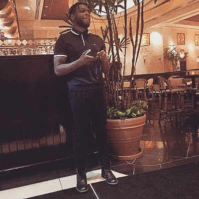

.jpg)
HELLO! My Name is Larry
This is my personal site! scroll down to learn more about me!
This is my personal site! scroll down to learn more about me!
Silver Spring, MD
I currently live in Arlington, VA but sometimes I go stay with my parents in Laurel, MD
I attended Bowie State for 2 years then transffered to UMBC where I graduated in 2017 with a BA in Graphic Design. Currently attending Bellevue University majoring in Web Development
Being a middle child I have two other sisters. My mom and dad live in MD and are both born in Nigeria
With years of practice and being able to integrate Photoshop into my work I've become advanced with using this tool
Currently working as a creative director at Cyber Security management firm. I use this tool constantly to create high end graphics
Proficient
Currently at a beginner level but steadily gaining experiece

WHAT DEFINES MY PERSONALITY?
I have an inquisitive mind which leads me to wanting to figure out how things work-- whether it be in politics, technology, music etc
WHAT ARE MY FAVORITE FOODS?
Currently I'd have to say Bulgogi is my favorite dish. I am a big fan of asian dishes
WHAT TALENTS DO I HAVE?
I would say the defining talent i have is in illustrating and painting. Ive been an artist for as long as I remember and being a graphic design as a career was pretty obvious at an early age
Web 330 BioSite
Created by Larry Ohaka
Bellevue University